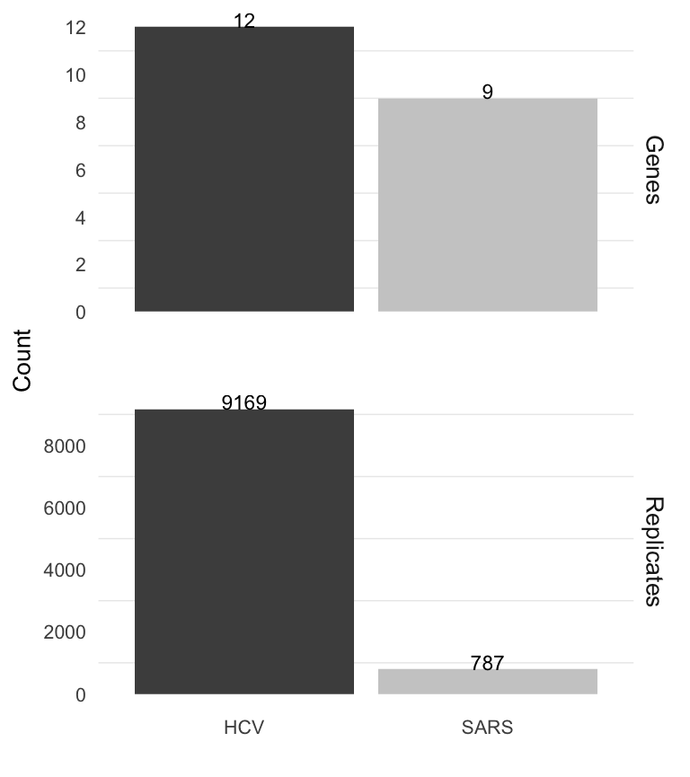
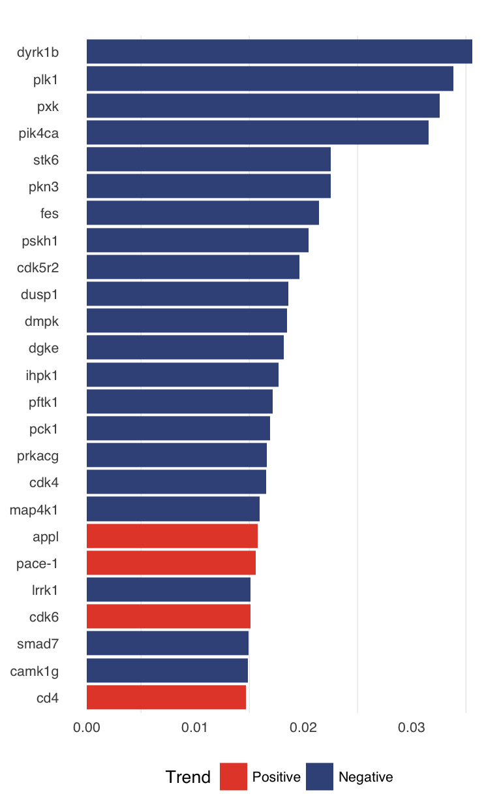
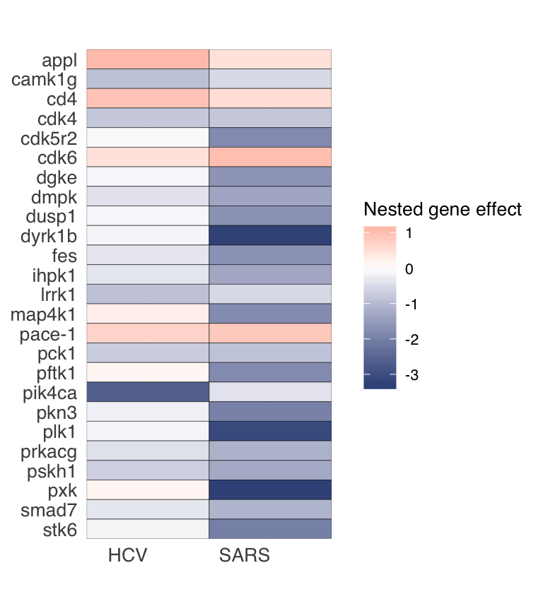
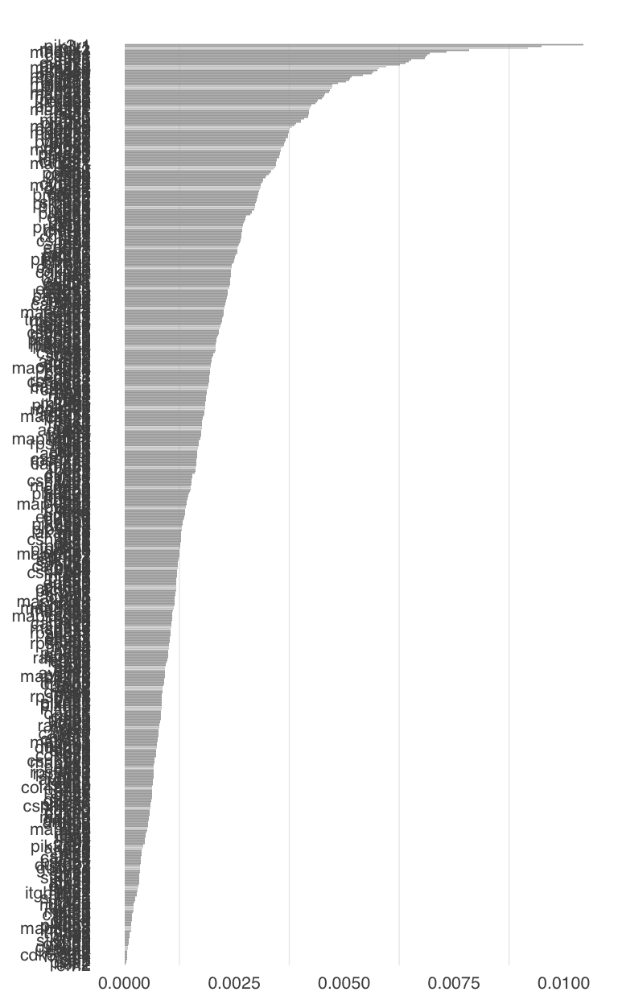

perturbatr does stage-wise analysis of large-scale genetic perturbation screens for integrated data sets consisting of multiple screens. For multiple integrated perturbation screens a hierarchical model that considers the variance between different biological conditions is fitted. That means that we first estimate relative effect sizes for all genes. The resulting hit lists is then further extended using a network propagation algorithm to correct for false negatives.
Here we show an example data analysis using a pan-pathogenic data set of three RNAi screening studies. The data set consists of two kinome and a druggable genome wide RNAi screen and have been published in Reiss et al. (2011) (HCV) and Wilde et al. (2015) (SARS).
This tutorial walks you to the basic functionality of perturbatr.
PerturbationData objectYou supposedly start with something like a data.frame or tibble:
head(rnaiscreen)## # A tibble: 6 x 9
## Condition Replicate GeneSymbol Perturbation Readout Control Design
## <chr> <int> <chr> <chr> <dbl> <int> <chr>
## 1 SARS 1 aak1 D-005300-01… 0.699 0 pooled
## 2 SARS 1 aatk D-005301-02… 0.713 0 pooled
## 3 SARS 1 cerk D-004061-01… -0.446 0 pooled
## 4 SARS 1 rapgef4 D-009511-01… -0.398 0 pooled
## 5 SARS 1 chek1 D-003255-06… 0.670 0 pooled
## 6 SARS 1 chek2 D-003256-05… 1.12 0 pooled
## # … with 2 more variables: ScreenType <chr>, Screen <chr>In order to start your analysis you need to create a perturbation data set first.For this you only need to call the as method on your data.frame:
rnaiscreen <- methods::as(rnaiscreen, "PerturbationData")Coercing your data.frame to PerturbationData will automatically warn you if your table is formatted wrongly. You need at least the following column names order to be able to do analysis of perturbation screens using perturbatr:
Depending on how you want to model the readout using the hierarchical model, you might want to add additional columns. For the sake of simplicity this suffices though.
PerturbationData S4 objectsA PerturbationData object consists of a single slot that stores your data. We bundled your data into an S4 object such that dispatch is easier to handle and to make sure that your data set has the correct columns:
rnaiscreen## A perturbation data set
##
## Condition GeneSymbol Readout
## 1 HCV cd81 -3.408623392
## 2 HCV pols 0.306241869
## 3 SARS dgke -2.040809074
## 4 SARS pycs -0.009019128 dataSet(rnaiscreen)## # A tibble: 215,427 x 9
## Condition Replicate GeneSymbol Perturbation Readout Control Design
## <chr> <int> <chr> <chr> <dbl> <int> <chr>
## 1 SARS 1 aak1 D-005300-01… 0.699 0 pooled
## 2 SARS 1 aatk D-005301-02… 0.713 0 pooled
## 3 SARS 1 cerk D-004061-01… -0.446 0 pooled
## 4 SARS 1 rapgef4 D-009511-01… -0.398 0 pooled
## 5 SARS 1 chek1 D-003255-06… 0.670 0 pooled
## 6 SARS 1 chek2 D-003256-05… 1.12 0 pooled
## 7 SARS 1 chka D-006704-01… 1.76 0 pooled
## 8 SARS 1 chkb D-006705-01… -0.343 0 pooled
## 9 SARS 1 chrm1 D-005462-01… 0.878 0 pooled
## 10 SARS 1 chuk D-003473-03… -0.511 0 pooled
## # … with 215,417 more rows, and 2 more variables: ScreenType <chr>,
## # Screen <chr>PerturbationData has some basic filter and rbind functionality. Similar to dplyr::filter you can select rows by some predicate(s). In the example below we extract all rows from the data set that have a positive readout.
perturbatr::filter(rnaiscreen, Readout > 0)## A perturbation data set
##
## Condition GeneSymbol Readout
## 1 HCV map3k6 0.7282263
## 2 HCV cbr4 1.4006160
## 3 SARS akap6 1.5684828
## 4 SARS ptk9 0.9923368Filtering on multiple rows works by just adding predicates:
perturbatr::filter(rnaiscreen, Readout > 0, Replicate == 2)## A perturbation data set
##
## Condition GeneSymbol Readout
## 1 HCV oprl1 0.1383848
## 2 HCV scrambled 1.4087365
## 3 SARS kiaa1765 0.5793374
## 4 SARS egfr 1.0068978If you want to combine data sets you can call rbind, which will automatically dispatch on PerturbationData object:
## A perturbation data set
##
## Condition GeneSymbol Readout
## 1 HCV psip1 0.09568979
## 2 HCV cxcr4 0.89078359
## 3 SARS gak 0.39316531
## 4 SARS cdkn3 0.83928484Finally, after having set up the data set, we analyse it using a hierarchical model and network diffusion.
We expect you already normalized the data sets accordingly. As noted above, if you want to analyse multiple data sets, make sure that every data set corresponds to a unique Condition.
First, let’s have a rough look at the data set that we are using:
plot(rnaiscreen)
We have roughly the same number of replicates per gene, but the HCV screen has less genes than the SARS data set. That is no problem however, because we automatically filter such that the genes are same. We also automatically remove positive controls for obvious reasons.
Next we rank the genes using a hierarchical model which requires explicitely modelling the readout of our data set using an R formula. Let’s look at the data in more detail first:
## Classes 'tbl_df', 'tbl' and 'data.frame': 215427 obs. of 9 variables:
## $ Condition : chr "SARS" "SARS" "SARS" "SARS" ...
## $ Replicate : int 1 1 1 1 1 1 1 1 1 1 ...
## $ GeneSymbol : chr "aak1" "aatk" "cerk" "rapgef4" ...
## $ Perturbation: chr "D-005300-01,D-005300-02,D-005300-03,D-005300-04" "D-005301-02,D-005301-03,D-005301-04,D-005301-05" "D-004061-01,D-004061-02,D-004061-03,D-004061-04" "D-009511-01,D-009511-02,D-009511-03,D-009511-04" ...
## $ Readout : num 0.699 0.713 -0.446 -0.398 0.67 ...
## $ Control : int 0 0 0 0 0 0 0 0 0 0 ...
## $ Design : chr "pooled" "pooled" "pooled" "pooled" ...
## $ ScreenType : chr "E/R" "E/R" "E/R" "E/R" ...
## $ Screen : chr "Kinome" "Kinome" "Kinome" "Kinome" ...Here, variables like Replicate, Plate, RowIdx/ColIdx should not be associated with a change in the response Readout as we normalized the data and corrected for batch effects. However, the Readouts should definitely have been different between ScreenTypes:
## [1] "E/R" "A/R"where E/R represents that the screen has measured the effect of a gene knockdown during the entry and replication stages of the viral lifecycle while A/R repesents the gene knockdown’s effect having been measures during the assembly and release stages of the lifecycle. In the life cycle of positive-sense RNA viruses we know that viruses make use of different host factors during their life cycle. That means while some genes are required during entry and replication, others might play a role in assembly and release of the virions. So we have reason to believe that the stage of the infection also introduces a clustering effect. In that case we would need to add a random effect for the stage of the infection.
A model selection using the Bayesian information criterion indeed suggests the following hierarchical random intercept model:
\[y_{cgtp} \mid\gamma_g, \delta_{cg}, \zeta_t , \xi_{ct} \sim \mathcal{N}(x_c \beta + \gamma_g + \delta_{cg} + \zeta_t + \xi_{ct}, \sigma^2),\] where \(y_{cgtp}\) is the readout of virus \(c\), gene \(g\), stage of the viral lifecycle \(t\) (E/R vs A/R) and \(p\) is the perturbation (siRNA) used for gene \(g\). We estimate the parameters of the model using lme4 (Bates et al. 2015):
frm <- Readout ~ Condition +
(1|GeneSymbol) + (1|Condition:GeneSymbol) +
(1|ScreenType) + (1|Condition:ScreenType)
res.hm <- hm(rnaiscreen, formula = frm)Note that for your own data different effects might be visible. Thus, before modelling you need to exploratorily detect possible effects.
Let’s take the last result and plot them. This yields a list of multiple plots. The first plot shows the first 25 strongest gene effects ranked by their absolute effect sizes. Most of the genes are colored in blue which represents that a gene knockdown leads to an inhibition of viral growth on a pan-viral level. Bars colored in red represent genes for which a knockdown results in increased viral viability. If you are interested in the complete ranking of genes, use geneEffects(res.hm).
pl <- plot(res.hm)
pl[[1]]
The second plots shows the nested gene effects, i.e. the estimated effects of a gene knockdown for a single virus. The genes shown here are the same as in the first plot, so it might be possible that there are nested gene effects that are stronger which are just not plotted. You can get all nested gene effects using nestedGeneEffects(res.hm).
pl[[2]]
Next we might want to smooth the effect from the hierarchical model using network diffusion, by that possibly reduce the number of some false negatives. For that we need to supply a graph as a data.frame and call the diffuse function:
graph <- readRDS(
system.file("extdata", "graph_small.rds",package = "perturbatr"))
diffu <- diffuse(res.hm, graph=graph, r=0.3)If we plot the results we get a list of reranked genes. Note that the ranking uses the network diffusion computes a stationary distribution of a Markov random walk with restarts.
plot(diffu) Further note that we used a very small network here. You might want to redo this analysis with the full graph which is located in system.file("extdata", "graph_full.rds",package = "perturbatr").
## R version 3.5.1 (2018-07-02)
## Platform: x86_64-pc-linux-gnu (64-bit)
## Running under: Ubuntu 18.10
##
## Matrix products: default
## BLAS: /usr/lib/x86_64-linux-gnu/openblas/libblas.so.3
## LAPACK: /usr/lib/x86_64-linux-gnu/libopenblasp-r0.3.3.so
##
## locale:
## [1] LC_CTYPE=en_US.UTF-8 LC_NUMERIC=C
## [3] LC_TIME=de_CH.UTF-8 LC_COLLATE=en_US.UTF-8
## [5] LC_MONETARY=de_CH.UTF-8 LC_MESSAGES=en_US.UTF-8
## [7] LC_PAPER=de_CH.UTF-8 LC_NAME=C
## [9] LC_ADDRESS=C LC_TELEPHONE=C
## [11] LC_MEASUREMENT=de_CH.UTF-8 LC_IDENTIFICATION=C
##
## attached base packages:
## [1] stats graphics grDevices utils datasets methods base
##
## other attached packages:
## [1] perturbatr_1.3.0 tibble_2.0.1 dplyr_0.8.0.1 BiocStyle_2.10.0
##
## loaded via a namespace (and not attached):
## [1] tidyselect_0.2.5 xfun_0.4 reshape2_1.4.3
## [4] purrr_0.3.0 operator.tools_1.6.3 splines_3.5.1
## [7] lattice_0.20-35 colorspace_1.4-0 htmltools_0.3.6
## [10] yaml_2.2.0 utf8_1.1.4 rlang_0.3.1
## [13] nloptr_1.2.1 pkgdown_1.3.0 pillar_1.3.1
## [16] glue_1.3.0 foreach_1.4.4 plyr_1.8.4
## [19] stringr_1.3.1 munsell_0.5.0 commonmark_1.7
## [22] gtable_0.2.0 codetools_0.2-15 memoise_1.1.0
## [25] evaluate_0.12 labeling_0.3 knitr_1.21
## [28] doParallel_1.0.14 parallel_3.5.1 fansi_0.4.0
## [31] Rcpp_1.0.0 backports_1.1.3 scales_1.0.0
## [34] BiocManager_1.30.4 desc_1.2.0 fs_1.2.6
## [37] lme4_1.1-20 ggplot2_3.1.0 digest_0.6.18
## [40] stringi_1.2.4 formula.tools_1.7.1 bookdown_0.9
## [43] rprojroot_1.3-2 grid_3.5.1 cli_1.0.1
## [46] tools_3.5.1 magrittr_1.5 diffusr_0.1.4
## [49] lazyeval_0.2.1 tidyr_0.8.2 crayon_1.3.4
## [52] pkgconfig_2.0.2 MASS_7.3-50 Matrix_1.2-14
## [55] xml2_1.2.0 minqa_1.2.4 assertthat_0.2.0
## [58] rmarkdown_1.11 roxygen2_6.1.1 rstudioapi_0.9.0
## [61] iterators_1.0.10 R6_2.4.0 igraph_1.2.2
## [64] nlme_3.1-137 compiler_3.5.1Bates, Douglas, Martin Mächler, Ben Bolker, and Steve Walker. 2015. “Fitting Linear Mixed-Effects Models Using lme4.” Journal of Statistical Software 67 (1): 1–48. doi:10.18637/jss.v067.i01.
Reiss, Simon, Ilka Rebhan, Perdita Backes, Ines Romero-Brey, Holger Erfle, Petr Matula, Lars Kaderali, et al. 2011. “Recruitment and activation of a lipid kinase by hepatitis C virus NS5A is essential for integrity of the membranous replication compartment.” Cell Host & Microbe 9 (1). Elsevier: 32–45.
Wilde, Adriaan H de, Kazimier F Wannee, Florine EM Scholte, Jelle J Goeman, Peter ten Dijke, Eric J Snijder, Marjolein Kikkert, and Martijn J van Hemert. 2015. “A Kinome-Wide Small Interfering Rna Screen Identifies Proviral and Antiviral Host Factors in Severe Acute Respiratory Syndrome Coronavirus Replication, Including Double-Stranded Rna-Activated Protein Kinase and Early Secretory Pathway Proteins.” Journal of Virology 89 (16). Am Soc Microbiol: 8318–33.